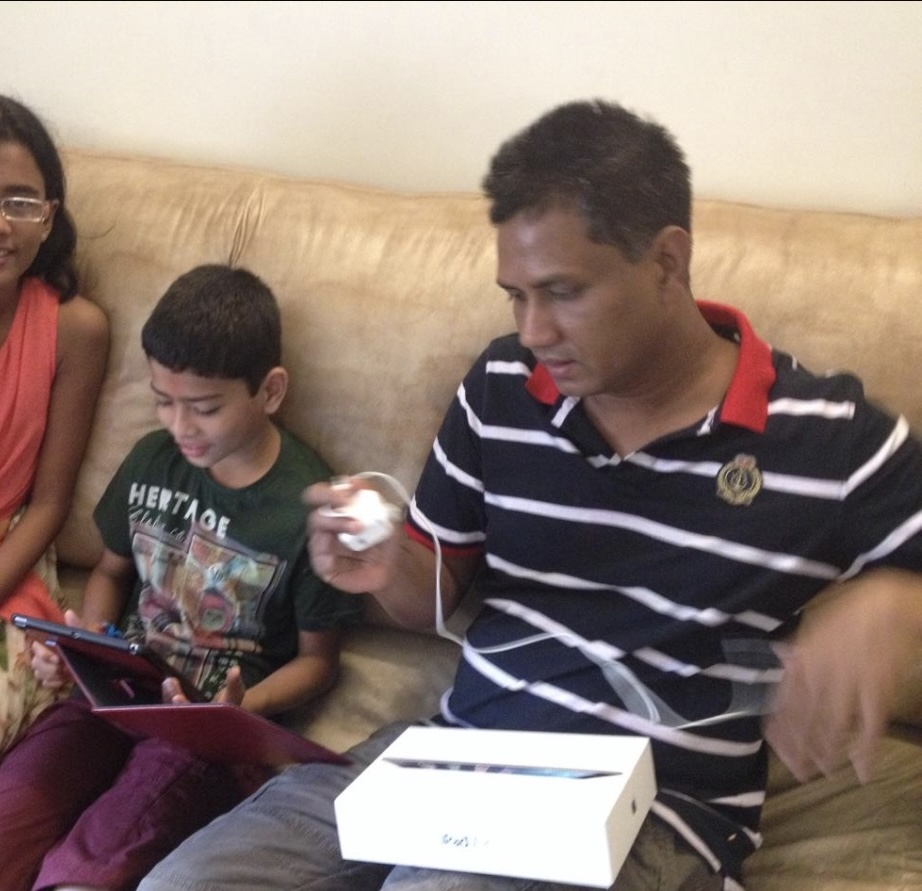
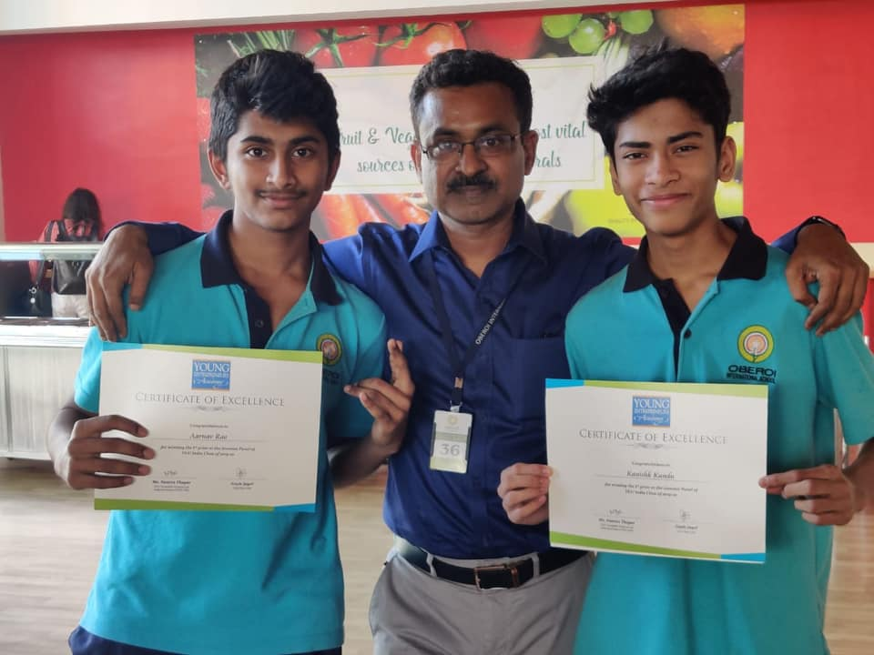

My dad gifted me my first device, an iPad, on my 11th birthday. I was then addicted to Clash of Clans for 3 years.
I used the iPad to earn my first internet $ at 14 by writing 'SEO optimized' (lol) wordpress articles on freelancer.com.
At 15, I entered an after-school entrepreneurship competition. I didnt have an idea so I built websites for everyone around me who did. I won & recieved a Rs. 20,000 (~$250) investment from Namita Thapar. I blew it on my first pair of jordans.